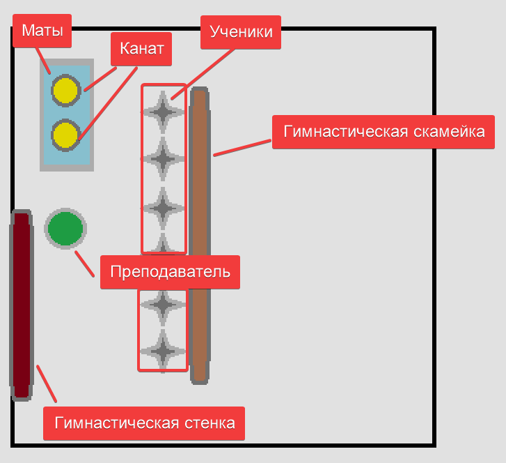

| № |
Частные задачи |
Содержание |
Дозировка |
ОМУ |
| I |
|
Подготовительная на часть |
15` |
|
| 1 |
Способствовать организации учащихся
Постановка учебной цели урока
|
Построение, приветствие, перекличка |
30`` |
 Обратить внимание на физическое состояние и форму занимающихся
Обратить внимание на физическое состояние и форму занимающихся
|
|
Сообщение задач урока |
30'' |
создать общую атмосферу занятия |
| 2 |
Способствовать профилактика плоскостопии и сколиоза |
Ходьба и её разновидности: |
2` |
Темп средний, спина прямая, дистанция 2 шара |
|
- На носках |
20'' |
Руки на пояс |
| - На пятках |
20'' |
Руки за голову |
| - На внутренней стороны стопы |
20'' |
Руки в сторону |
| - На внешней стороне стопы |
20'' |
Руки вперед |
| - Перекатом с пятки на носок |
20'' |
Руки за голову |
| - Полуприседе |
20'' |
Руки на пояс |
| 3 |
Способствовать разминки мышц нижних конечностей |
Бег и её разновидности: |
2` |
Темп средний, спина прямая, дистанция 2 шара |
|
- С высоким подниманием бедра |
20'' |
Бетро поднимать под 90 градусов |
| - Захлестывает голени |
20'' |
Руки работают как при обычном беге |
| - Приставным шагом правым боком |
20'' |
Руки работают снизу в сторону |
| - то же левом боку |
20'' |
| - Скрестным шагом правым боком |
20'' |
Руки в стороны |
| - То же левым боком |
20'' |
| 4 |
Способствует подготовке организма к основной части урока |
Прыжки и его разновидности: |
2` |
Темп средний, спина прямая, дистанция 2 шара, способствувать повышение ЧСС (120 уд/мин) |
|
- Прыжки на правой с продвижением вперед |
20'' |
Руки помогают вытолковать туловище вверх |
| - Прыжки на левый с продвижением вперед |
20'' |
| - Бег с ускорением |
2 x 15m |
Частота движения рук максимальная |
| 5 |
Восстановить дыхание |
Ходьба: |
30`` |
Темп cпокойной, спина прямая, дистанция 2 шара |
|
Упражнение на восстановление дыхания |
|
|
1 - 2 - руки вверх
3 - 4 - руки вверх |
|
Вдох
Выдох |
| 6 |
Способствовать повышению подвижности суставов верхнего плечевого пояса |
ОРУ в движении |
3` |
Темп cпокойной, спина прямая, дистанция 2 шара |
|
И. П. - Руки вперед
1 - 4 - Круговые движения кистями внутрь
5 - 8 - То же наружу
|
4 раза |
Кисть натянута, руки суставах не сгибать |
И. П. - Руки в стороны
1 - 4 - Круговое движение предплечье внутрь
5 - 8 - то же наружу |
4 раза |
Амплитуда движения чуть ниже максимальной |
И. П. - Руки перед грудью
1 - 2 - Отведение согнутых рук назад
3 - 4 - Доведение прямых рук
назад |
4 раза |
И. П. - Руки вверх
1 - 4 - Круговые движения руками вперёд
5 - 8 - То же назад |
4 раза |
| Способствовать разминки мышц туловища и нижних конечностей |
Ходьба выпадами с поворотом туловища в сторону впереди стоящей ноги |
20'' |
Задняя стоящая нога натянута |
| Ходьба наклонными к впереди стоящей ноги |
20'' |
Ноги не сгибать, амплитуда максимальная |
| 7 |
|
Перестроение |
30`` |
В колонну по 5, дистанция 3 шага
|
| 8 |
|
ОРУ на месте |
3` |
Фронтальный метод |
|
Способствовать разминки мышц туловища |
И. П. - ст. ноги врозь
1 - руки к плечам
2 - руки вверх
3 - наклон назад прогнувшись, руки всторони
4 - руки вверх
5 - наклон прогнувшись, руки всторони
6 - руки вверх
7 - руки к плечам
8 - И. П.
|
4 раза |
Следить за правельностю выполнения упражнения. Постепенно увеличивать темп упражнения |
| Способствовать разминки мышц спины и нижних конечностей |
И. П. - широкая ст ноги врозь
1 - Наколка правой, руки вперёд
2 - 7 - Пружинящие наклоны к левой
8 - И. П.
9 - 18 - То же в другую сторону
|
2 раза |
Амплитуда движения умеренная |
| Способствовать развитию быстроты |
Прыжки и его разновидности: |
|
Убедиться чтобы ученики не cмогут cтолкнуться друг с другом, после окончания упражнения ходьба на месте |
И. П. - руки на пояс
1 - Прыжок ст ноги врозь
2 - Прыжок правая вперёд
3 - Прыжок левую вперед
4 - Прыжок и п
|
4 раза |
|
и. п - то же
1 - 4 - прыжки по квадрату
|
4 раза |
|
и. п - то же
1 - Прыжок ноги врозь
2 - Прыжок вверх
3 - Прыжок cогнуть ноги вперед
4 - Прыжок вверх
|
4 раза |
|
| 9 |
Восстановление дыхания |
Ходьба на месте
1 - 2 - руки вверх
3 - 4 - руки вверх
|
30`` |
Темп cпокойной, спина прямая |
| 10 |
Способствовать организации учащихся |
Перестроение по отделениям |
30`` |
I Отделение - Канат > Опорный прыжок
II Отделение - Опорный прыжок > Канату
|
| II |
|
Основная часть |
25` |
|
|
Способствует развитию сили, координационный способностей |
Лазание по канату в три приема |
10` |

методов организации занимающихся: фронтальный, поточный
|
| 1 |
Создать общее представление о технике выполнения упражнения |
Рассказ |
2` |
Лазанье по канату в три приёма
Исходном положении: Вис стоя;
1. Согнуть ноги, захват каната ногами;
2. Выпрямить ноги;
3. Перехват руками;
Потом заново повторяется цикл;
Спуск аналогично в обратном порядке;
Объяснить технику безопасности:
1. Не спрыгивать с каната
2. Не cкользить вниз по канату
3. Обязательно использовать магнезию
|
| 2 |
Создать зрителям представления |
Показ |
1` |
Демонстрация самим учителем, Уделить больше внимания хватом |
| 3 |
Способствовать формированию двигательного умения |
Сидя на гимнастическая скамье,
захват гимнастический палки ногами,
|
2` |
Раздать каждому гимнастическую палку;
Проверить силу захвата ногами, потянуть палку вверх |
|
И.П. - Вис сидя на гимнастическая скамейка, хват ногами канат. Перехватывая руками - встать |
3 раза |
Следить за правильностью работи рук, |
И.П. - Стоя сбоку у гимнастической стенке, вис стоя
1. - Согнуть ноги, ставя ноги на ступеньку
2. - Выпрямить ноги
3. - Перехват руками
|
2 раза |
Два раза вверх, два раза вниз аналогично |
| Тоже само стоя у каната |
2 раза |
Следить за правильностью выполнение техники |
| 4 |
Способствует закреплению двигательного умения |
Лазанье по канату в три приёма. |
2 раза |
|
|
Способствует развитию скоростно-силовых качество, координационный способностей
Способствовать формированию дисциплины |
Опорный прыжок cпособом ноги врозь |
10` |
методов организации занимающихся: фронтальный, поточный
|
| 1 |
Повторить технику наскок на мостик и приземление |
Махом одной, с возвышенность на две > Прыжок вверх |
10 раз |
Обратить внимание на фазу приземления, ноги слегка согнуты, руки вперед в стороны, cпина прямая |
|
С небольшого разбегом на наскок на мостик с выпрыгивание вверх с продвижение вперёд > Приземление |
3 раза |
Наскок выполняется на середину мостика, ноги при этом "жёсткае";
При приземлении ноги слегка согнуты, руки вперед в стороны, cпина прямая |
| 2 |
Способствует координации работы рук и ног |
Упор cтоя у козла - прыжок ноги врозь |
3 раза |
С каждым разом увеличивает амплитуду прыжка; Уделить внимание работе рук |
| 2 |
Закрепить динамику выполнения прыжка в целом
Способствовать формирование чувство коллективизма, ответственности |
С разбега опорный прыжок ноги врозь |
5 раз |
Уделить внимание на детали техники
Обязательно должен быть человек на страховке
|
-->
|
|
Эстафети |
5` |
|
| 1 |
|
1. "Вызов игроков" |
1 - 2 раза |
Играющие делятся на 2 команды и становятся в колонну по одному. Игроки команд рассчитываются по порядку номеров.
Руководитель вызывает номер. Например: 1, затем 5 и так далее. Вызванные игроки бегут до установленного места, там
обегают стойку (предмет) и возвращаются обратно. Команда, игрок которой вернулся первым, получает очко. Выигрывает
команда, которая получит наибольшее количество очков. |
2 |
|
2. "Прыгунки" |
1 - 2 раза |
Дети делятся на две команды и строятся в колонны один за другим. За сигналом ведущего участники каждой команды исполняют
прыжок, отталкиваясь двумя ногами с места. Первый прыгает, второй стаёт на то место, до которого допрыгнул первый, и
прыгает дальше. Когда все игроки прыгнут, ведущий измеряет всю длину прыжков первой и второй команды. Выигрывает та
команда, которая прыгнула дальше. |
| III |
|
Заключительная часть |
5` |
|
| 1 |
Способствовать организации учащихся |
Перестроение |
30`` |
В шеренгу |
| 2 |
Содействовать восстановлению дыхания |
Ходьба
1 - 2 Руки вверх
3 - 4 Ну ты вниз |
1 |
На месте
Вдох
Выдох |
| 3 |
Содействует оценка качества выполнения заданий, мотивация занятий спортом |
Подведение итогов занятия |
3` |
Выделитьтипичны еошибки при выполнении технических элементов, похвалить всех хорошо за выполненную
работу |
| 4 |
Содействовать самостоятельным занятия физическим Упражнениями
|
Домашнее задание
Поднимание опускание туловища в упоре лежа |
30``
3 x 12 р
|
|